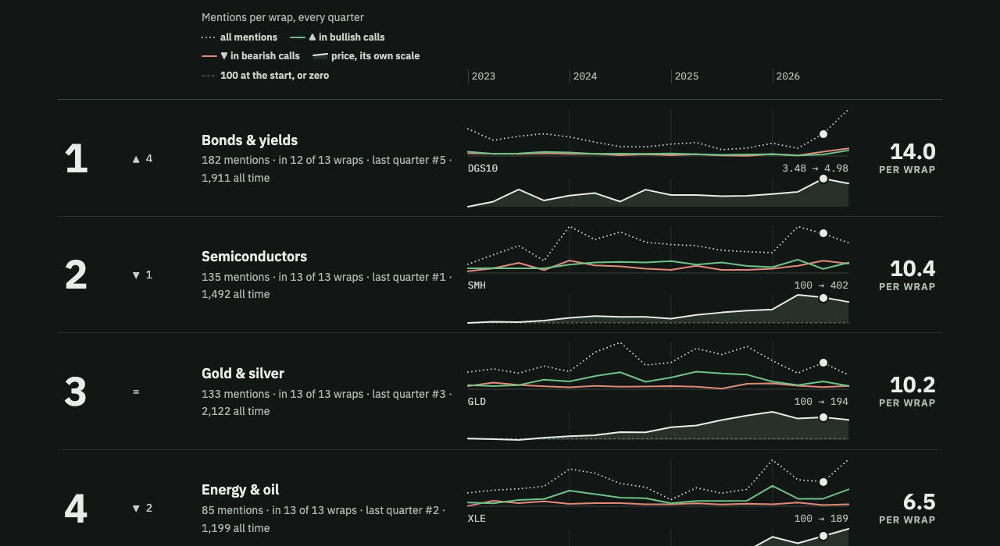
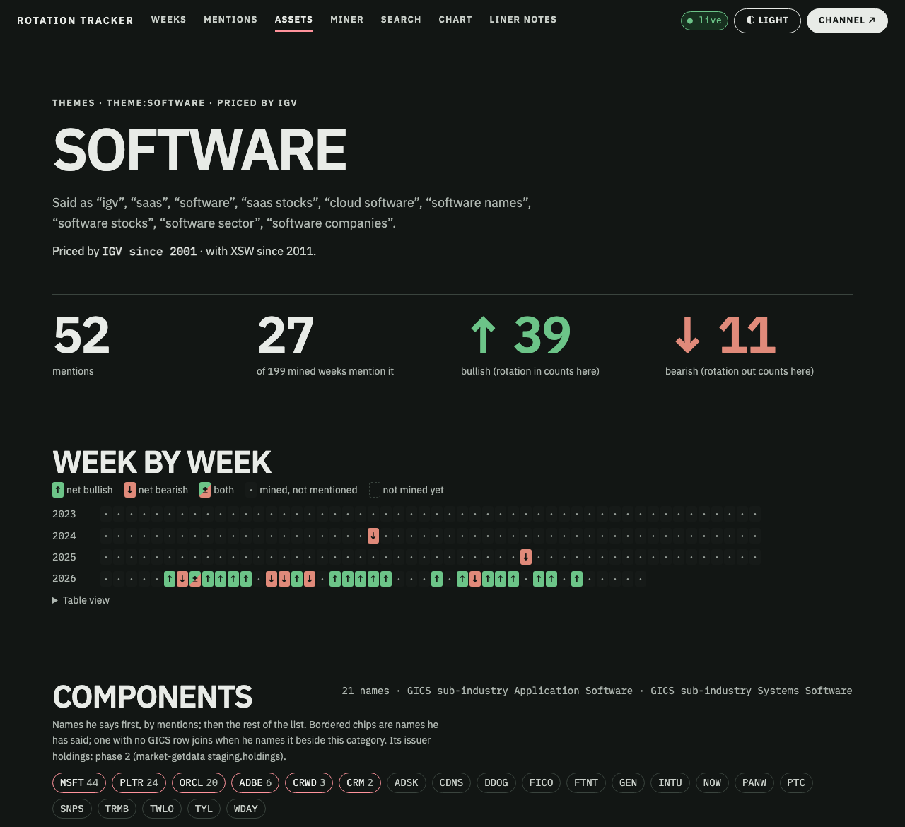

Every asset he talks about now has a price, refreshed every Saturday morning
The plan you approved is built across three repos and committed locally. A new sibling, market-getdata, loaded 776 series into database market. rotation-tracker reads them over postgres_fdw, and the Chart and Asset pages now draw them. Nothing is pushed: the last section asks how you want it shipped.
market: 751 Yahoo symbols (2.59 M daily rows), 18 FRED series, 7 baskets. The plan said about 750.Where the build differs from the plan, and why
The price line is neutral ink, not the accent
The plan said price lines would use --accent. At this project's provisional hue the accent is a salmon red, and in the Chart legend "price" and "bearish" looked the same. The price is not a stance, so it is now solid ink with a faint fill. "All mentions" stays dotted, bullish green, bearish red.
A basket starts when its first member does, which is too early for Mag 7
The rule you approved rebases a basket to 100 on the first day any member has a price. So basket:mag7 runs from 1980 on Apple alone, and basket:hardware from 1962 on HP. The Chart shows 2023 onwards, where every member trades, so nothing visible is wrong. The measurement branch needs a minimum-members rule before it looks further back. Question 2 below.
Smaller departures, each deliberate
Constituent fetchers copied, not moved. rotation-tracker's universe.py still builds assets/v1; market-getdata has its own copy. proxy: left themes.yaml. assets/proxies.yaml is now the one source, and rt.assets.proxy holds the primary's bare Yahoo symbol, so it is empty where the primary is FRED or a basket. Two spread assets added, rates:10y3m and rates:2s10s; 11 unknown rows now resolve to them. FRED vintages store changes only, not a full copy per week. Yahoo's "close" is split-adjusted; Yahoo has no truly unadjusted close, which the docs say. The fdw mapping skips the password check on loopback: inside the shared container, localhost is trusted, and Postgres refuses a non-superuser mapping otherwise. It maps only to the read-only market_ro.
A price strip under every Chart row, and what is inside each category
Both screenshots are the live viewer on port 8089, restarted on the new build at 13:54 today.


One weekly loop, two databases, one join
The 18 Chart themes and the series under each
From /api/chart?view=themes on the live viewer. "Q1 2023 → now" is the strip's first and last point. Performance series start at 100; the 10-year yield is shown in percent.
| Chart theme | Asset | Series | Drawn as | History from | Q1 2023 → now |
|---|---|---|---|---|---|
| Bonds & yields | rates:us10y | fred:DGS10 | level | 1962-01-02 | 3.48 → 4.98 |
| Semiconductors | theme:semis | yahoo:SMH | performance | 2000-06-05 | 100 → 402 |
| Gold & silver | commodity:gold | yahoo:GLD | performance | 2004-11-18 | 100 → 194 |
| Energy & oil | sector:energy | yahoo:XLE | performance | 1998-12-22 | 100 → 189 |
| Banks & financials | theme:banks | yahoo:KBE | performance | 2005-11-15 | 100 → 195 |
| Crypto | crypto:btc | yahoo:BTC-USD | performance | 2014-09-17 | 100 → 271 |
| AI | theme:ai | yahoo:AIQ | performance | 2018-05-16 | 100 → 246 |
| Consumer | sector:discretionary | yahoo:XLY | performance | 1998-12-22 | 100 → 159 |
| Software & SaaS | theme:software | yahoo:IGV | performance | 2001-07-17 | 100 → 171 |
| The dollar | fx:dxy | yahoo:DX-Y.NYB | performance | 1971-01-04 | 100 → 99 |
| Healthcare | sector:healthcare | yahoo:XLV | performance | 1998-12-22 | 100 → 151 |
| Big tech | theme:mag7 | basket:mag7 | performance | 1980-12-12 see flag | 100 → 306 |
| China | theme:china-stocks | yahoo:FXI | performance | 2004-10-08 | 100 → 122 |
| Defensives | theme:defensives | basket:defensives | performance | 1998-12-22 | 100 → 143 |
| Utilities | sector:utilities | yahoo:XLU | performance | 1998-12-22 | 100 → 143 |
| Small caps | index:rut | yahoo:IWM | performance | 2000-05-26 | 100 → 163 |
| Industrials | sector:industrials | yahoo:XLI | performance | 1998-12-22 | 100 → 174 |
| Real estate | sector:real-estate | yahoo:XLRE | performance | 2015-10-08 | 100 → 130 |
What is in database market
| staging table | Rows | What it holds |
|---|---|---|
series_values | 2,780,748 | The one table a chart needs: every series key by date. Yahoo gives adjusted close, FRED its value, baskets their index. |
prices_daily | 2,587,828 | 751 Yahoo symbols, open to volume, both closes. 530 stocks from 2015; everything else from its first date. |
series_vintages · series_daily | 137,101 | 18 FRED series. The first vintage today, so the two tables match; they diverge as FRED revises. |
basket_prices_daily | 55,819 | 7 baskets, equal weight, monthly rebalance, through adjusted close, rebased to 100. |
actions | 28,865 | Dividends and splits. A new action makes that symbol refetch its full history, so adjusted closes never go stale. |
instruments | 776 | One row per series: source, type, first and last date, the reasons it is fetched, and its history start. |
constituents | 604 | Today's S&P 500 and Nasdaq-100 snapshot with GICS. Written again only when the list changes. |
baskets | 34 | Members of the seven baskets. |
The reasons overlap: 518 series are constituents, 218 he names, 104 are proxies, 39 companions, 32 basket members. The database is 1.2 GB with raw, about four times the plan's estimate, and data/ on disk is 302 MB. Both are outside git.
Three repos, committed locally, nothing pushed
rotation-tracker · branch prices
Seven commits on top of main: the spec and plan page, proxies/v2 and rt.asset_proxies, the fdw import, the viewer's price strips and components, docs, and the colour fix.
New commands. rt assets seed, export-symbols, components <id>, check-proxies; rt db migrate now imports market_staging.
Checks re-run by me. 167 pytest, ruff, format, mypy strict on src and tests; frontend typecheck, 27 vitest, design lint. All green.
market-getdata · main, new repo
Eight commits: the propertyiq_getdata setup piece for piece, the Yahoo, FRED and constituents sources, the manifest loader and dbt staging, CLI and audit, launchd scripts, a synthetic consumer fixture, docs, and the instruments file.
Checks re-run by me. 82 offline pytest (6 live tests deselected), ruff, format, mypy strict; dbt 9 models and 56 tests green in the backfill and the launchd run.
Public-safe. No price file is tracked. The one committed fixture is labelled synthetic: seeded random walks.
nmp-central-ai · branch feat/registry-p12-market
One commit in a sibling worktree, ../nmp-central-ai-market. The main checkout is untouched. It adds P12 market-getdata and declares postgres_fdw on rotation's database.
Applied. make db-init ran from that worktree. It created market, market_owner and market_ro, added the extension, and restarted DbGate to show the new connection.
Checks. make check ARGS="--only P12" passes; P11 passes with ext=postgres_fdw.
Each build step's done-when, checked
| Step | Done when | Status | Evidence |
|---|---|---|---|
| 1 · Decide | Answers back, page shows them | done | All six queued in the review; recorded in ai_specs/s03_prices.md. |
| 2 · proxies/v2 | Every mentioned asset resolves to a series or a reasoned none; export ≈ 750 | done | check-proxies: 323 assets, 318 priced, 5 none, 0 unresolved. Export 326 series; with the 518 constituents that is 776, not 750. |
| 3 · Scaffold | make check ARGS="--only P12" passes | done | PASS, 2 roles, smoke 0. |
| 4 · Yahoo | Backfill lands; counts match manifests; first dates match the probe | done | 751 of 751 symbols, 10,527 partitions loaded, dbt green. SMH 2000, IGV 2001, AIQ 2018, XLRE 2015 match the 30 Oct probe. |
| 5 · FRED | Every series present, recent | done | 18 of 18. Daily ones end 29 to 30 Oct; four monthly ones lag by design. |
| 6 · Baskets, constituents | Each basket back to its earliest member; one month reproduced by hand | done | dbt singular test assert_basket_month_by_hand; values match a pandas reference to 1e-9. Early-years caveat in the flag above. |
| 7 · Schedule, audit | Two consecutive runs land unattended, audit clean | 1 of 2 | Installed. One launchd-triggered run today: exit 0, nothing new, audit clean. With weekly cadence the second proof is Saturday 7 Nov. |
| 8 · fdw, viewer | Every Chart row has a price line; design lint passes; viewer boots without market | done | 18 of 18 keyword rows, 300 of 302 asset rows (2 are none). Lint clean. Absence tested with the empty database before the backfill. |
| 9 · Docs, PRs | Docs in both repos; /no-mistakes; PRs | docs only | AGENTS.md and README in both repos, the spec, this page. Push and PRs wait for your answer below. |
The commands that matter
# run the weekly job now, exactly as launchd does launchctl kickstart -k gui/$(id -u)/com.nmp-dsci.market-update tail -f ~/.market/update.log # or by hand, from market-getdata scripts/update.sh uv run --extra db --env-file .env market-getdata audit # stop the schedule scripts/install-launchd.sh --uninstall # rotation-tracker: re-import after market adds a table; inspect a category uv run rt db migrate uv run rt assets components theme:software uv run rt assets check-proxies
| Watch for | What happens |
|---|---|
| Docker asleep on Saturday | The job runs on this Mac. If the platform stack is down at 09:00, the load fails and the log says so. launchd runs a missed job once when the Mac wakes; Docker must be up by then. |
| Yahoo throttling | The backfill was not throttled. The fetcher backs off and records per-symbol failures, which the audit lists. |
| Survivorship | Constituents and basket:hardware use today's lists. Dated history of index changes is phase 2. |
| A new staging table | Re-run rt db migrate in rotation-tracker so the fdw imports it. |
Two decisions before this ships
Next after shipping: the measurement branch. It scores forward returns at 1, 4, 13, 26 and 52 weeks from the Monday open after each wrap, against SPY, and checks rotation in and out against price. Still waiting from earlier: make install-house-ui for the projects behind the house canon.